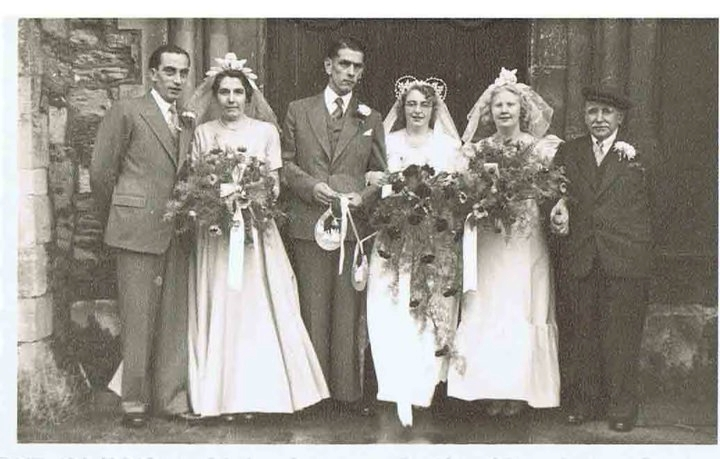
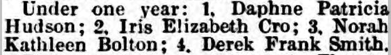
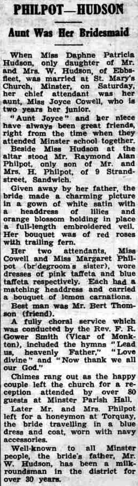
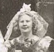
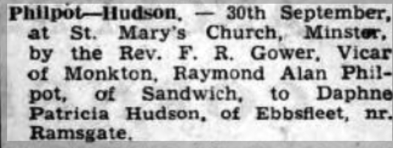
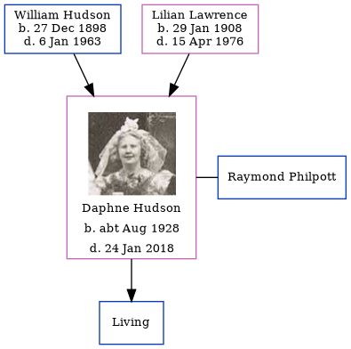

Daphne Patricia Philpott (née Hudson) cAug 1928 - 2018
[ Home ] | [ Calendar ] | [ Surnames Index ] | [ Errors ] | [ Family History ]The child of William Hudson (a milkman) and Lilian Lawrence, Daphne Hudson, a cousin on the mother's side of Nigel Horne, was born in Thanet, Kent, England c. Aug 19281,2. She married Raymond Philpott (with whom she had 1 surviving child, ) at St Mary the Virgin Church, Minster in Thanet on 30 Sept 19503. In 2003, she was living at 3 Ash Road, Sandwich, Kent, England.
She died on 24 Jan 2018.
Parents
- William Charles was born on 27 Dec 1898
- Lilian Florence was born on 29 Jan 1908
Citations
- England & Wales births 1837-2006 - Findmypast
- England & Wales, Birth Index: 1916-2005 Online publication - Provo, UT, USA: The Generations Network, Inc., 2008.Original data - General Register Office. England and Wales Civil Registration Indexes. London, England: General Register Office. © Crown copyright. Published by permission of the Cont
- England & Wales, Marriage Index: 1916-2005 Online publication - Provo, UT, USA: The Generations Network, Inc., 2009.Original data - General Register Office. England and Wales Civil Registration Indexes. London, England: General Register Office. © Crown copyright. Published by permission of the Cont
Media
Mum and Dad Marriage

Thanet Advertiser 28 Jun 1929 - Minster Fete baby show result

Thanet Advertiser 6 Oct 1950

Daphne Hudson

Thanet Advertiser 6 Oct 1950 (2)

England & Wales marriages 1837-2008 - BMD/M/1950/3/AO/000813/100
England & Wales births 1837-2006 - BMD/B/1928/3/AZ/000604/107
Family Tree
Map
Generated by ged2site. Last updated on Jul 3, 2024
Known Issues
Parent William is listed in the residence for 1935, but this child is not
Parent William is listed in the residence for 1936, but this child is not
Death date (24 Jan 2018) has no citations
Residence record for 2003 contains no citation
Listed in the residence for 2003, but spouse Raymond Philpott is not
Date of death is known, but not place